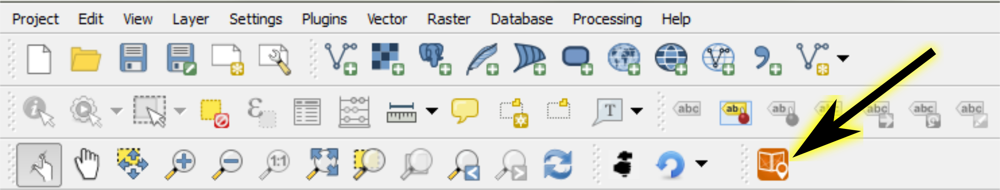
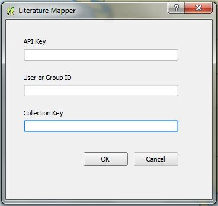
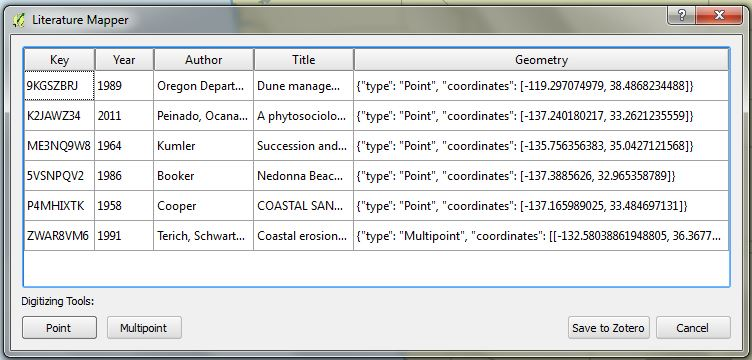
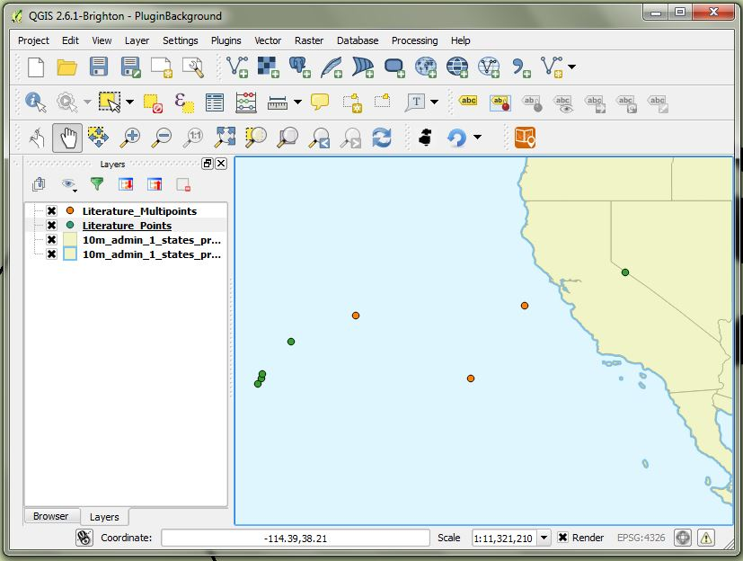

Tobias Research
Web Maps
Web maps related to Michele Tobias' academic research on coastal plant communities.
Introduction
Literature Mapper is a plugin for QGIS that inserts geoJSON geometry strings into an online Zotero database to facilitate the mapping of study site locations. My Literature Map is an example of a map that has benefitted from this tool. The locations stored in the database are displayed on the map canvas in virtual point and multipoint shapefiles on start up.
Credits: Literature Mapper is developed by Michele Tobias and Alex Mandel.
Documentation
Recommedations & Disclaimer
Literature Mapper is an experimental plugin for QGIS 2.x and 3.x. The developers of Literature Mapper make no guarantees that the program will function as intended. Because the program may alter your database in unexpected ways, it is highly recommended that you back up your Zotero database before you alter it with Literature Mapper.
Download & Install
Literature Mapper is available as an experimental plugin in the QGIS Manage & Install Plugins interface. Once installed, you can find it on the Plugins Menu.
Alternatively, you may download development versions of Literature Mapper at the GitHub repository for the project and place it in your QGIS plugins folder. When you start QGIS, it should be available on the Installed Plugins menu of the Manage and Install Plugins tool (find this in the Plugins Menu).
Use
Start the Literature Mapper Plugin
To start the Literatue Mapper Plugin, click on the LiteratureMapper option in the Plugins menu. Next, click the icon in your toolbar or find the Literature Mapper icon on the Plugins Menu.
Interface 1: Access Keys
Literature Mapper works with an online Zotero Database. You can connect your local Zotero database to an online account. You will need to find your user ID, the collection ID for the collection of citations you would like to use with Literature Mapper, and your API key.
Your user ID and your API key can be found or created at https://www.zotero.org/settings/keys. The collection key can be found by navigating to the library in your online account (My Library tab --> click on the library name in the left navigation bar) and finding the alphanumeric character string at the end of the URL.
Enter each key into their respective text boxes - just the alphanumeric keys, no punctuation such as quotes - and click "ok". The program will check the keys you entered with Zotero. If the keys are recognized, the next window will open. If there is any error, a message bar will show at the top of the map canvas window. If you receive an error, check that you entered your keys correctly and check to see that Zotero's online system is functioning. You do not need to be logged into your Zotero Online account for Literature Mapper to work, but checking to see that it is available can rule out an error caused by Zotero not being online.
Interface 2: Enter Locations
In the mapping interface, the table should be populated with information from the Zotero collection you entered earlier. (You should not edit any column except the Geometry column. In future updates, only the Geometry column will be editable.)
Add Point Locations
To add a location to a record, click on the record you want to update. Click the Point button in the table, then click its location on the map canvas. You should see that the text in the Geometry column has been updated to look something like this: {"type": "Point", "coordinates": [-140.504592652, 37.1942567162]}. Add locations to as many records as you would like.
Add Multipoint Locations
Adding a multipoint is ideal for literature that has more than one point location associated with it, as is often the case with studies that compared multiple sampling locations. To add a multipoint location to a record, click the record you want to update. Next, click the Multipoint button in the table, then click the locations for this record on the map canvas.
Saving
When you are done, click the "Save to Zotero" button. Because the only method of saving your work is by saving changes to Zotero, you may want to save frequently as you work. Changes not saved to Zotero will not be saved in the case of a crash. Saving may take several minutes if you have many records. The program will alert you that it has finished saving with a banner at the top of the map canvas in the main QGIS window.
Virtual Shapefiles
On start up, the plugin will scan your Zotero database to look for locations you've previously entered. When it finds them, it sorts the locations into either a point or multipoint virtual shapefile. If you would like to keep these shapefiles, right click on the file in the Layers List, then select Save As. Currently, the shapefiles don't update in real time as you edit, although this is on the list of future upgrades. To referesh the shapefiles, you need to restart the plugin.
Planned Upgrades:
- Automatic updating of the virtual shapefiles while editing.
- Allow panning and zooming between the addition of points in a multipoint record.
- Improve saving time.
Known Trouble Spots:
Issues are tracked on the GitHub repository's Issues tab. Here are some known issues with Literature Mapper that may cause you some trouble. We're working on these and encourage you to file other issues on the issue tracker.
- LiteratureMapper records coordinates in the units of your project's coordinate system at the time you mark them. This means within your Zotero database, you can have points recorded in multiple projections if you don't plan ahead. This will be fixed in future releases.
- If you have text entered into the Extra field in your Zotero database, Literature Mapper will overwrite these because it uses the Extra field to store the geometries. If you want to keep this information, you will need to move it to a different field (perhaps a Note) before you save anything with Literature Mapper. Future versions of Zotero may make creating other fields (such as a geometry field) possible, but for now, we use the Extra field.
- If the Title column has the name of your saved PDF instead of the actual name of the article, check to see if your database has attached documents. In some cases, attached documents can cause the database to use the file name (such as FullText.pdf) instead of the article name you entered. Remove them using your regular Zotero tools.
- Version 0.3 (released 2018-11-15) fails on dates that are not four digit years (example: 2018 works but 2018-11-15 does not).
- Version 0.3 fails when you have a pdf linked to a citation. This will be fixed in an upcoming release and is currently available in the development version on github.
Works Citing LiteratureMapper
Goldstein et al. (2018), Literature-based latitudinal distribution and possible range shifts of two US east coast dune grass species (Uniola paniculata and Ammophila breviligulata). PeerJ 6:e4932; DOI 10.7717/peerj.4932 https://peerj.com/articles/4932.pdf
Recommended Citation
Tobias, M.M., and A.I. Mandel. 2015. Literature Mapper. QGIS Plugin. https://github.com/MicheleTobias/LiteratureMapper/blob/master/literature_mapper.py